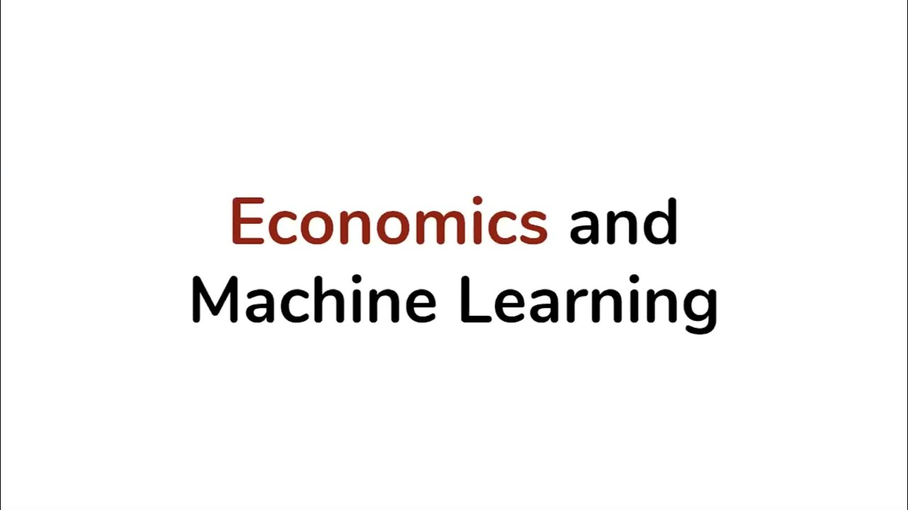
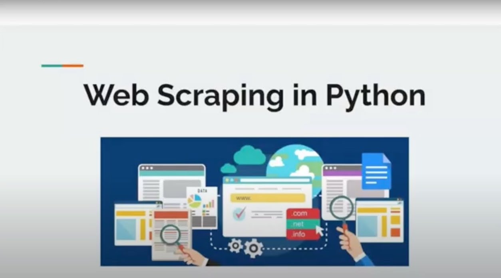

Uncover the field of data science by diving into Machine Learning and Web
Scraping, App Development workshops led by our mentors with diverse experience
in applying mathematical knowledge into code.
Episodes
Details
-
 1. COVID-19 Economic Data Visualization (33m)
1. COVID-19 Economic Data Visualization (33m)
Learn how to tackle large datasets through the the data cycle: collecting, visualize, and analyze datasets that compare economic progress in various countries during the COVID-19 pandemic. -

2. Economics & Machine Learning (50m)
Are you up for the challenge to utilize your data programming skills and machine learning to predict the country of Algeria's economy up to the year of 2049? -
 3. Police Data Web App (41m)
3. Police Data Web App (41m)
Learn how to create an interactive Python data exploration web app using Streamlit, an open-source framework for Machine Learning and Data Science! -

4. Web Scraping (21m)
Learn about scraping web information through this introduction using BeautifulSoup!